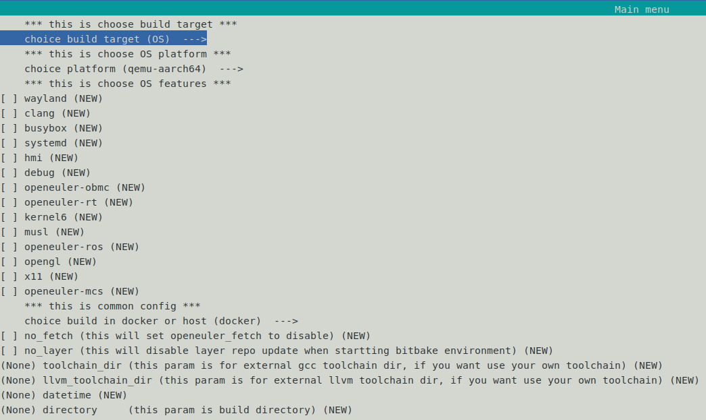
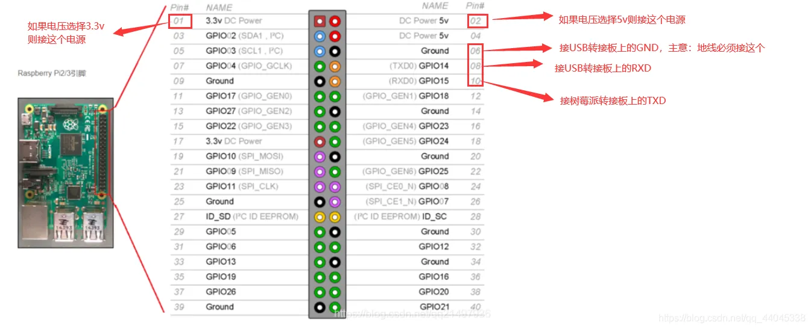
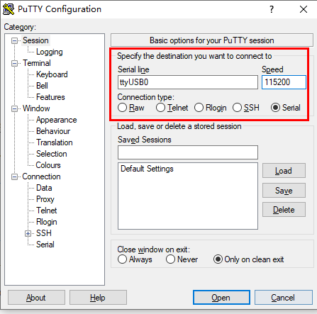

树莓派4B镜像构建与使用¶
本章主要介绍openEuler Embedded中树莓派4B的构建，使用和特性介绍。
树莓派镜像构建指导¶
构建指导
参照 安装步骤 完成oebuild安装，并详细了解构建过程
依次执行以下命令完成构建
# 生成raspberrypi4-64配置文件 oebuild generate -p raspberrypi4-64 # 进入构建交互终端 oebuild bitbake # 构建镜像 bitbake openeuler-image # 构建sdk bitbake openeuler-image -c do_populate_sdk
除了使用上述命令进行配置文件生成之外，还可以使用如下命令进入到菜单选择界面进行对应数据填写和选择，此菜单选项可以替代上述命令中的oebuild generate，选择保存之后继续执行上述命令中的bitbake及后续命令即可。
oebuild generate具体界面如下图所示:
二进制介绍：
Image: 树莓派内核镜像
openeuler-glibc-x86-64-openeuler-image-cortexa72-raspberrypi4-64-toolchain-*.sh: SDK工具链
openeuler-image-raspberrypi4-64-*.rootfs.rpi-sdimg: openEuler Embedded树莓派支持SD卡镜像
镜像使用方法
1.镜像烧录:
linux
dd if=openeuler-image-raspberrypi4-64-*.rootfs.rpi-sdimg of=/dev/xxxx
if : 指定编译好的树莓派镜像文件
of : 指定u盘被识别的设备文件, 注意是主设备名, 例如 /dev/sdb, 而不是分区的设备名, 例如 /dev/sdb1, /dev/sdb2
windows
参考: 树莓派SD卡烧录指导
2.镜像使用
镜像烧录前查看/修改文件
使用 losetup 将磁盘镜像文件虚拟成块设备
losetup -f --show openeuler-image-raspberrypi4-64-*.rootfs.rpi-sdimg
例如，显示结果为 /dev/loop0
使用 kpartx 创建分区表 /dev/loop0 的设备映射
kpartx -va /dev/loop0
得到结果是 /dev/loop0 的两个分区设备
add map loop0p1
add map loop0p2
运行 ls /dev/mapper/loop0p* 可以看到对应的两个分区
/dev/mapper/loop0p1 /dev/mapper/loop0p2
分区挂载
创建挂载目录
mkdir ${WORKDIR}/boot ${WORKDIR}/root
挂载boot分区
mount -t vfat -o uid=root,gid=root,umask=0000 /dev/mapper/loop0p1 ${WORKDIR}/boot
挂载root分区
mount -t ext4 /dev/mapper/loop0p2 ${WORKDIR}/root
挂载完成后，可以查看boot分区和root分区下树莓派镜像的文件，其中boot分区为启动引导分区，包含了引导程序，内核镜像，设备树，config.txt和cmdline等配置文件，root分区为根文件系统分区。
镜像烧录后查看/修改文件
镜像烧录完成后, 此时插入的读卡器会被识别成两个分区设备, 例如/dev/sdb1, /dev/sdb2
分区挂载
创建挂载目录
mkdir ${WORKDIR}/boot ${WORKDIR}/root
挂载boot分区
mount -t vfat -o uid=root,gid=root,umask=0000 /dev/sdb1 ${WORKDIR}/boot
挂载root分区
mount -t ext4 /dev/sdb2 ${WORKDIR}/root
有些情况下(linux系统配置), 分区设备/dev/sdb1, /dev/sdb2会自动挂载, 可以略过分区挂载步骤直接查看/修改文件.
基于openEuler Embedded树莓派使用¶
启用树莓派
硬件版本要求：树莓派4B
默认用户名：root，密码：第一次启动没有默认密码，需重新配置，且密码强度有相应要求， 需要数字、字母、特殊字符组合最少8位，例如openEuler@2021。
将刷写镜像后的SD卡插入树莓派，通电启用。
树莓派登录方式
1.本地登录
a.使用串口登录：
镜像使能了串口登录功能，按照树莓派的串口连接方式，如下图，可以启用串口操作。
示例：使用ttyusb转接器，将树莓派串口通过USB连接到putty：
putty配置参考： Serial line:ttyUSB0 speed:115200 Connection type:Serial
b.使用HDMI登录：
树莓派连接显示器（树莓派视频输出接口为 Micro HDMI）、键盘、鼠标后，启动树莓派，可以看到树莓派启动日志输出到显示器上。待树莓派启动成功，输入用户名（root）和密码登录。
2.ssh 远程登录
网络配置:
参考 网络配置/openEuler Embedded网络配置
使用ssh命令登录:
ssh root@x.x.x.x
分区扩容
默认根目录分区空间比较小，在使用之前，需要对分区进行扩容（在22.09及其之后的版本中，已实现自动扩容，首次烧录镜像启动会自动执行扩容并提示重启）
以下为手动扩容方法，内容引用: 树莓派使用：启用树莓派：分区扩容
1.查看磁盘分区信息
执行 fdisk -l 命令查看磁盘分区信息。回显如下：
Device Boot StartCHS EndCHS StartLBA EndBLA Sectors size Id Type
/dev/mmcblk0p1 * 64,0,1 831,3,32 8192 106495 98304 48.0M c Win95 FAT32(LBA)
/dev/mmcblk0p2 832,0,1 1023,3,32 106496 360447 253952 124M 83 Linux
SD 卡对应盘符为 /dev/mmcblk0，包括 2 个分区，分别为
/dev/mmcblk0p1：引导分区
/dev/mmcblk0p2：根目录分区
这里我们需要将根目录分区 /dev/mmcblk0p2 进行扩容。
2.分区扩容
对根目录/dev/mmcblk0p2进行扩容
1.执行 fdisk /dev/mmcblk0 命令进入到交互式命令行界面，按照以下步骤扩展分区，如下图所示。
2.输入 p，查看分区信息。
3.记录分区 /dev/mmcblk0p2 的起始扇区号，即 /dev/mmcblk0p2 分区信息中 Start 列的值，示例中为 106496。
4.输入 d，删除分区。
5.输入 2 或直接按 Enter，删除序号为 2 的分区，即 /dev/mmcblk0p2 分区。
6.输入 n，创建新的分区。
7.输入 p 或直接按 Enter，创建 Primary 类型的分区。
8.输入 2 或直接按 Enter，创建序号为 2 的分区，即 /dev/mmcblk0p2 分区。
9.输入新分区的起始扇区号，即第 1 步中记录的起始扇区号，示例中为 106496。
须知： 请勿直接按“Enter”或使用默认参数，否则会擦损磁盘数据。
10.按 Enter，使用默认的最后一个扇区号作为新分区的终止扇区号。
11.输入 w，保存分区设置并退出交互式命令行界面。
增大未加载的文件系统大小
resize2fs /dev/mmcblk0p2
#需重启生效
树莓派镜像特性介绍¶
1.树莓派硬件特性，参考:树莓派使用:GPIO介绍
目前已使能串口设备，可以访问mini-uart，其他硬件特性暂不支持。
2.支持百级嵌入式软件包，见软件包功能列表。
3.支持部署rt实时内核。